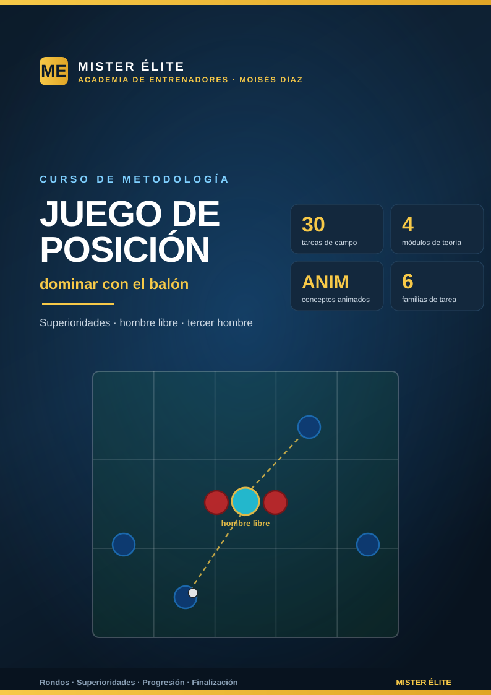

Juego de posición: dominar con el balón
MISTER ÉLITE — Moisés Díaz
Curso de metodología para entrenar el juego de posición: ocupar racionalmente el espacio, crear superioridades y circular el balón con la intención de progresar, finalizar y, al perderlo, recuperarlo de inmediato. Filosofía del curso: poca teoría, mucha aplicación práctica.
A quién va dirigido
A entrenadores de fútbol (formación y rendimiento) que quieran enseñar a su equipo a dominar con el balón de verdad: no a "tener" posesión, sino a usarla para mandar en el partido. Útil desde categorías de formación avanzada hasta sénior. No exige un sistema concreto: es una metodología transferible a cualquier modelo de juego.
Objetivos del curso
Al terminar, el entrenador será capaz de:
- Distinguir juego de posición de posesión estéril y medir la posesión por su finalidad, no por el número de pases.
- Reconocer y provocar las tres superioridades (numérica, posicional, cualitativa) y encontrar al hombre libre.
- Aplicar la ocupación racional del espacio (5 carriles + alturas, regla "máx. 2 por carril, no 3 en la misma línea").
- Entrenar los mecanismos clave: hombre libre, atraer-cambiar, tercer hombre, pase entre líneas, perfil y orientación, ritmo (pausa-aceleración), conducir vs pasar.
- Diseñar y progresar la cadena rondo → juego de posición → partido, y coachearla con criterio (qué corregir, cuándo intervenir, freeze por excepción).
- Trabajar la posesión con finalidad: progresar, finalizar, proteger el balón y aplicar la contrapresión tras pérdida.
- Construir microciclos integrando las 30 tareas del banco.
Cómo está organizado
El curso se divide en 4 módulos de teoría (concisos, aplicados) y 6 familias de ejercicios (30 tareas en total) más un plan de sesiones. Cada tarea trae su pizarra; cada concepto teórico clave, su diagrama.
TEORÍA (por qué y cómo) PRÁCTICA (banco de 30 tareas)
01 Fundamentos F1 Rondos posicionales (T1–5)
02 Mecanismos → F2 Juegos de posición (T6–10)
03 Del rondo al juego F3 Superioridades / hombre libre (T11–15)
04 Posesión con finalidad F4 Progresión y dirección (T16–20)
F5 Posesión para finalizar (T21–25)
F6 Posesión defensiva (T26–30)
Índice
Teoría
- Módulo 01 · Fundamentos del juego de posición
- Módulo 02 · Mecanismos del juego de posición
- Módulo 03 · Del rondo al juego de posición (y al partido)
- Módulo 04 · Posesión con finalidad
Práctica
- Plan de sesiones · 2 microciclos
- Familia 1 · Rondos posicionales y de orientación (T1–5)
- Familia 2 · Juegos de posición clásicos (T6–10)
- Familia 3 · Crear y usar superioridades / hombre libre (T11–15)
- Familia 4 · Posesión con progresión y dirección (T16–20)
- Familia 5 · Posesión para finalizar (T21–25)
- Familia 6 · Posesión defensiva: recuperar y conservar (T26–30)
Recursos
Leyenda de la notación
Notación única para todas las pizarras del curso.
Fichas (jugadores):
| Color | Significado |
|---|---|
| 🔵 Azul | Poseedores — el equipo que tiene el balón. |
| 🔴 Rojo | Defensores / recuperadores — el equipo que presiona o roba. |
| 🟠 Ámbar | Comodines / apoyos neutrales — juegan SIEMPRE con quien tiene el balón. |
| 🔷 Azul-cian | 2.º equipo poseedor — en juegos a tres equipos o que rotan posesión. |
Espacio y marcas:
- Conos → delimitan el campo, las zonas, los carriles, las puertas y las mini-porterías.
- Carriles → 5 franjas verticales (banda izq · pasillo interior izq · centro · pasillo interior der · banda der). Los pasillos interiores (2 y 4) son las "zonas de oro" para recibir entre líneas.
- Líneas / alturas → franjas horizontales (defensa · medio · ataque) que hacen visibles las líneas defensivas que romper.
Flechas:
- Pase → amarillo discontinuo.
- Conducción → azul.
- Desmarque / apoyo → blanco.
- Presión (defensor) → rojo.
- Las secuencias se numeran 1 – 2 – 3 para indicar el orden de la jugada.
Cada pizarra lleva al pie la marca MISTER ÉLITE — Moisés Díaz.
Glosario de conceptos
- Superioridad numérica — tener más jugadores que el rival en la zona del balón (el clásico +1). Garantiza salida limpia: siempre sobra alguien.
- Superioridad posicional — estar mejor situados que el rival (entre líneas, escalonados, con mejor orientación), aunque haya igualdad numérica. Un pase que la explota salta varios rivales de golpe.
- Superioridad cualitativa — generar un 1v1 a nuestro favor (nuestro jugador es claramente superior al defensor). Se busca aislando al jugador de calidad y cambiándole el balón con espacio.
- Hombre libre — el jugador sin marca directa que sobra respecto a la presión del rival. Encontrarlo y usarlo es el objetivo nº 1 de cada acción. Suele estar en el lado contrario a la presión.
- Tercer hombre — combinación de tres jugadores para alcanzar a un compañero (el tercero) que el primer pasador no podía encontrar directamente: A juega a B para que B encuentre a C, que aparece libre mientras el balón viaja.
- Atraer para liberar (fijar y cambiar) — provocar la presión del rival en una zona (fijar) para abrir el espacio contrario y cambiar el juego allí, donde queda superioridad o un 1v1.
- Pase entre líneas — pase introducido en el espacio entre dos líneas rivales (típicamente medios y defensas) a un compañero orientado. El pase que más rompe: supera una línea entera.
- Ocupación racional del espacio — repartir a los jugadores por carriles y alturas con la regla "máx. 2 por carril, no 3 en la misma línea", para dibujar triángulos y rombos y tener siempre 3+ líneas de pase.
- Ritmo (pausa-aceleración) — gestionar la velocidad del juego: pausar para fijar y leer, acelerar justo cuando se abre la ventaja.
- Posesión estéril — tener mucho el balón sin progresar ni amenazar: circulación horizontal y hacia atrás que no desordena al rival.
- Contrapresión (counter-pressing) — presionar de inmediato tras perder el balón para recuperarlo donde se perdió, aprovechando que el rival está mal orientado.
Curso "Juego de posición: dominar con el balón" · MISTER ÉLITE — Moisés Díaz